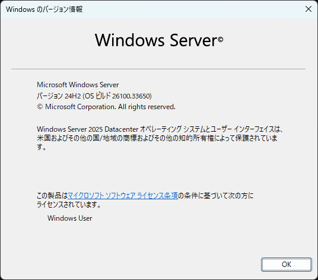
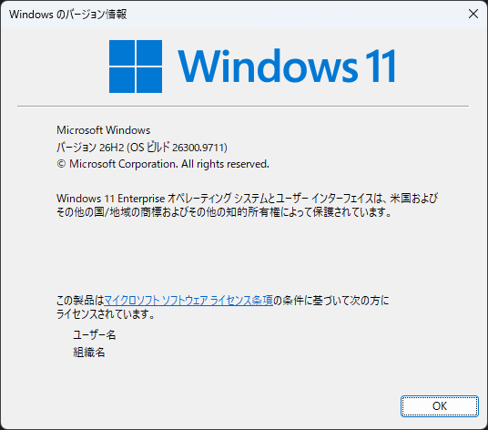

※ 本記事はマイクロソフト社員によって公開されております。
AI の普及により、必要な情報を短時間で得られる場面が増え、サポートにも、より迅速で的確な対応が期待されるようになってきました。弊社サポートでも、こうした期待に応えるため、お問い合わせ内容の整理や調査に AI を活用し、効率的に対応を進める取り組みを行っています。
本記事では、迅速なサポートへつながるお問い合わせのまとめ方を 障害対応 と 製品の使い方や動作に関するご質問 に分けてご紹介しております。弊社へお問い合わせいただく際の参考としてご活用ください。
お問い合わせ内容を具体的にお伝えいただくことの大切さは、AI の活用によって変わるものではありませんが、お客様固有の環境や背景、確認したいことを正しく把握することは、調査の出発点となります。これらの情報をお問い合わせ時に共有いただくことで、担当エンジニアが状況を把握しやすくなり、追加確認のやり取りを減らして、より円滑に調査を進めることにつながります。
お問い合わせ内容の記載例１：障害対応
以下の形式を参考に、分かる範囲で発生している障害の情報を整理してください。すべての項目を埋められない場合は、未確認であることを記載いただければ問題ありません。
1 | 【概要・希望する支援】 |
1.「概要・希望する支援」を明確にする
お問い合わせの冒頭に、問題の概要を簡潔に記載してください。「動作しない」「確認してほしい」だけでは、対象やゴールを判断するための追加確認が必要になる場合があります。原因の特定、エラーの解消、設定の確認、再発防止のための情報など、サポートに確認したいことや目指したい状態を記載してください。希望する支援が明確であれば、対応のゴールを共有しやすくなります。
2.「環境」を具体的にする
OS 名だけでなく、バージョン、エディションなど、問題に関係する端末やサーバーの環境情報を記載してください。特にネットワーク接続を伴う問題では、接続先だけでなく接続元端末の情報もお知らせください。環境を具体的にすることで、確認すべき条件を絞り込みやすくなります。
Windows のバージョン情報を確認する手順は、ページ下部の 参考：Windows のバージョン情報を確認する方法 をご参照ください。
3.「発生日時・頻度」を記載する
問題が最初に発生した日時や、現在どのくらいの頻度で発生するかを記載してください。発生した時刻が分かると、ログなどの関連情報と照らし合わせて確認しやすくなります。正確な日時が不明な場合は、おおよその時期でも構いません。
4.「事象」を具体的に説明する
問題が発生する操作、表示されるエラー メッセージやエラー コード、期待していた動作、実際の動作を記載してください。エラー メッセージは要約だけでなく、可能な範囲で正確な文面を共有いただくと、内容を特定しやすくなります。
再現する場合は、問題が発生するまでの操作を番号付きで記載してください。
- 問題が発生する前の状態や準備
- 実施した操作
- 画面に表示された内容や実際の結果
- 期待していた結果
5.「影響範囲（ビジネスインパクト）」を具体的にする
問題が発生する端末やサーバーの台数、対象ユーザー、影響を受けている業務、現在利用できる回避策の有無などを記載してください。問題が一部のユーザーや環境だけで発生する場合は、影響を受ける対象に共通する条件と、正常に動作する環境との違いも分かる範囲でお知らせください。
業務影響や緊急度は、「困っている」といった表現だけでなく、実際に停止・遅延している業務や対象範囲を具体的に記載すると、状況を把握しやすくなります。
6.「発生までの経緯」を時系列に沿って記載する
問題発生前後に行った変更や、発生後に確認したことを時系列に沿って記載してください。確認できた事実と推測は分けて記載いただくと、問題との関連を検討しやすくなります。
たとえば、「更新プログラムが原因だと思います」だけではなく、「10 月 20 日 14 時ごろに更新プログラムを適用し、再起動後から接続に失敗するようになった。更新前は同じ端末から接続できていた」のように、観察した内容と推測を区別してお知らせください。
7.「実施済みの対応」を結果とあわせて記載する
すでに試した対処や確認がある場合は、実施内容だけでなく、その結果も記載してください。たとえば、「再起動した」だけでなく、「再起動後も同じエラーが発生した」「別のユーザーでは再現しなかった」のように結果を添えると、同じ確認を繰り返すことを避け、次の調査に進みやすくなります。
8.「添付情報」は内容と取得日時を記載する
ログや画面キャプチャを添付する場合は、対象の製品、取得した日時、問題が発生した時刻が分かるようにしてください。
障害対応では、ログなどの資料が必要になる場合があります。採取手順は Windows の資料採取に関する情報公開サイト をご参照ください。
9.「調査やログ採取での制約」を背景と合わせて記載する
セキュリティや運用上の理由などにより、ログの採取、ツールの実行、設定変更、再起動、事象の再現などが難しい場合は、分かる範囲でその旨をお知らせください。あらかじめ制約が分かることで、実施可能な確認方法を検討しやすくなります。
お問い合わせ内容の記載例２：製品の使い方や動作に関するご質問
以下の形式を参考に、確認したい内容や前提条件をお知らせください。検証を実施していることは必須ではありません。「未検証」「構成を検討中」の場合も、その旨を記載いただければ問題ありません。
1 | 【環境】 |
1.「環境」を具体的にする
OS 名だけでなく、バージョン、エディションなど、環境情報を記載してください。環境を具体的にすることで、確認すべき条件を絞り込みやすくなります。
Windows のバージョン情報を確認する手順は、ページ下部の 参考：Windows のバージョン情報を確認する方法 をご参照ください。
2.「確認したいこと」を分ける
「この構成で問題ありませんか」といった広い質問だけではなく、確認したい動作や条件を具体的に記載してください。たとえば、「設定を変更した場合、既存の接続にも変更が反映されますか。新しい接続だけが対象ですか」のように、どの点を知りたいかを明確にします。複数の確認事項がある場合は番号を付けると、確認事項と回答の対応が分かりやすくなります。
3.「背景・目的」を記載する
どのような構成や運用を検討しており、回答をもとに何を判断したいのかをお知らせください。たとえば、「既存の接続に影響を与えずに設定を変更できるか判断したい」のように目的が分かると、質問の意図を把握し、必要な注意点を確認しやすくなります。
4.「前提条件」を明確にする
想定している構成、設定値、利用条件、変更できない制約などを分かる範囲で記載してください。現在の環境と検討中の構成を区別し、不明な条件は「未確認」と記載すると、前提を推測してしまうことを避けやすくなります。
5.「確認済みの情報」と不明な点を記載する
公開資料を参照した場合は、URL と該当する見出しや記述を示してください。検証した場合は条件と結果もお知らせください。公開資料を見つけられなかった場合や未検証の場合は、その旨を記載いただければ問題ありません。
参考：Windows のバージョン情報を確認する方法
winver でバージョン情報を確認する
デスクトップ画面を利用できる Windows では、以下の手順でバージョン情報を確認できます。
- ［Windows］キーを押しながら［R］キーを押し、［ファイル名を指定して実行］を開きます。
winverと入力し、［Enter］キーを押します。- 表示された［Windows のバージョン情報］で、製品名、エディション、バージョン、OS ビルドを確認し、お問い合わせに記載してください。
Windows Server 2025 のバージョン情報の例
| 項目 | 値 |
|---|---|
| OS | Windows Server 2025 |
| エディション | Datacenter |
| バージョン | 24H2 |
| OS ビルド | 26100.33650 |

Windows 11 のバージョン情報の例
| 項目 | 値 |
|---|---|
| OS | Windows 11 |
| エディション | Enterprise |
| バージョン | 26H2 |
| OS ビルド | 26300.9711 |

OS ビルドの小数点以下は、適用されている累積更新プログラムに対応しておりますので、OS ビルド番号を記載いただくことで、適用されている更新プログラムが把握できます。なお、OS ビルドと適用されている更新プログラムの対応は、以下の release information で公開されております。
Windows Server release information
[英語] https://learn.microsoft.com/en-us/windows/release-health/windows-server-release-info
[日本語] https://learn.microsoft.com/ja-jp/windows/release-health/windows-server-release-info
Windows 11 - release information
[英語] https://learn.microsoft.com/en-us/windows/release-health/windows11-release-information
[日本語] https://learn.microsoft.com/ja-jp/windows/release-health/windows11-release-information
Windows 10 - release information
[英語] https://learn.microsoft.com/en-us/windows/release-health/release-information
[日本語] https://learn.microsoft.com/ja-jp/windows/release-health/release-information
既に修正された問題に該当する場合もございますため、可能な限り、最新の更新プログラムでも事象が再現するかどうかをご確認ください。
※本情報の内容（添付文書、リンク先などを含む）は、作成日時点でのものであり、予告なく変更される場合があります。